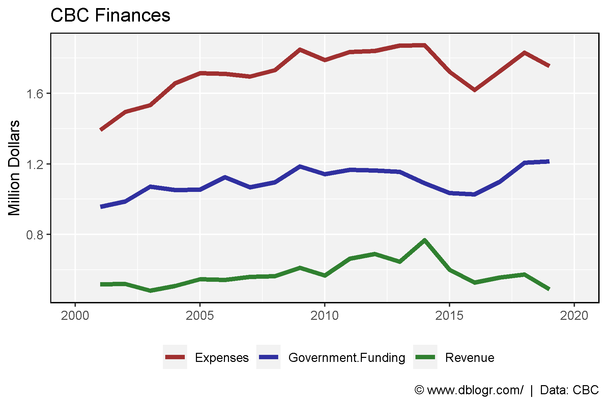
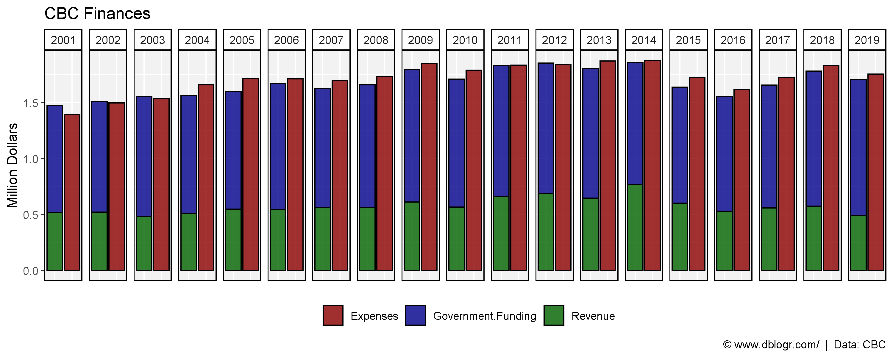
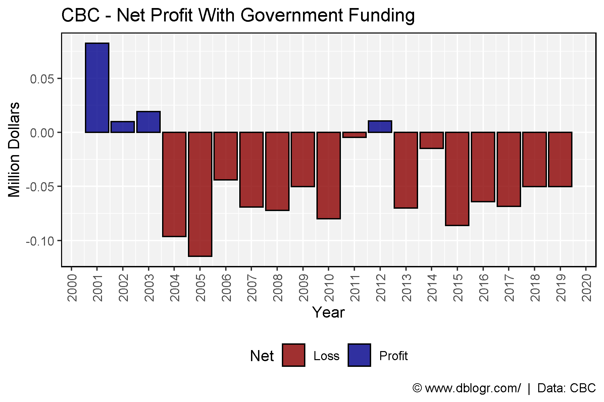
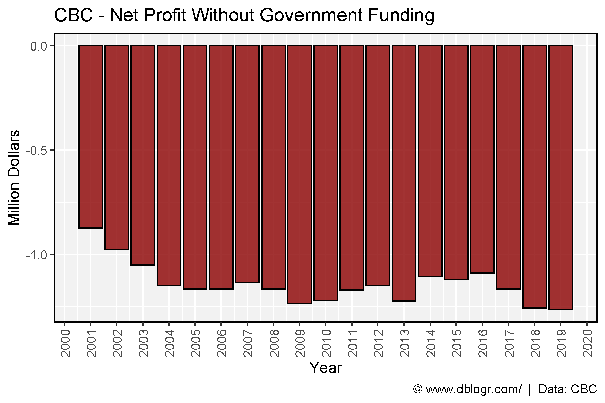

# devtools::install_github("derekmichaelwright/agData")
library(agData) # Loads: tidyverse, ggpubr, ggbeeswarm, ggrepel
# Prep data
xx <- read.csv("cbc_finances_data.csv") %>%
gather(Source, Value, Revenue, Government.Funding, Expenses) %>%
mutate(PlusMinus = ifelse(Source == "Expenses", "Plus", "Minus"),
Value = Value / 1000000)calculate the cost per person per year
# Prep data
cost <- read.csv("cbc_finances_data.csv") %>%
filter(Year == 2019) %>%
pull(Government.Funding)
pop <- agData_STATCAN_Population %>%
filter(Year == 2019, Area == "Canada") %>%
pull(Value) %>% mean()
cost / pop## [1] 0.03233661mp <- ggplot(xx, aes(x = Year, y = Value, color = Source)) +
geom_line(size = 1.5, alpha = 0.8) +
scale_x_continuous(breaks = seq(2000, 2020, 5), limits = c(2000, 2020)) +
scale_color_manual(name = NULL, values = c("darkred" , "darkblue", "darkgreen")) +
theme_agData(legend.position = "bottom") +
labs(title = "CBC Finances", x = NULL, y = "Million Dollars",
caption = "\xa9 www.dblogr.com/ | Data: CBC")
ggsave("canada_population_demographics1.png", width = 6, height = 4)
mp <- ggplot(xx, aes(x = PlusMinus, y = Value, fill = Source)) +
geom_bar(stat = "identity", position = "stack", color = "black", alpha = 0.8) +
facet_grid(. ~ Year) +
scale_fill_manual(name = NULL, values = c("darkred" , "darkblue", "darkgreen")) +
theme_agData(legend.position = "bottom",
axis.text.x = element_blank(),
axis.ticks.x = element_blank()) +
labs(title = "CBC Finances", x = NULL, y = "Million Dollars",
caption = "\xa9 www.dblogr.com/ | Data: CBC")
ggsave("canada_population_demographics2.png", width = 10, height = 4)
# Prep data
xx <- read.csv("cbc_finances_data.csv") %>%
mutate(Profit = Revenue + Government.Funding - Expenses,
Net = ifelse(Profit > 0, "Profit", "Loss") )
# Plot
mp <- ggplot(xx, aes(x = Year, y = Profit / 1000000, fill = Net)) +
geom_bar(stat = "identity", color = "black", alpha = 0.8) +
scale_fill_manual(values = c("darkred","darkblue")) +
scale_x_continuous(breaks = 2000:2020) +
theme_agData(legend.position = "bottom",
axis.text.x = element_text(angle = 90, hjust = 1, vjust = 0.5)) +
labs(title = "CBC - Net Profit With Government Funding", y = "Million Dollars",
caption = "\xa9 www.dblogr.com/ | Data: CBC")
ggsave("canada_population_demographics3.png", width = 6, height = 4)
# Prep data
xx <- read.csv("cbc_finances_data.csv") %>%
mutate(Profit = Revenue - Expenses,
Net = ifelse(Profit > 0, "Profit", "Loss"))
# Plot
mp <- ggplot(xx, aes(x = Year, y = Profit / 1000000, fill = Net)) +
geom_bar(stat = "identity", color = "black", alpha = 0.8) +
scale_fill_manual(values = c("darkred","darkblue")) +
scale_x_continuous(breaks = 2000:2020) +
theme_agData(legend.position = "none",
axis.text.x = element_text(angle = 90, hjust = 1, vjust = 0.5)) +
labs(title = "CBC - Net Profit Without Government Funding", y = "Million Dollars",
caption = "\xa9 www.dblogr.com/ | Data: CBC")
ggsave("canada_population_demographics4.png", width = 6, height = 4)
© Derek Michael Wright www.dblogr.com/